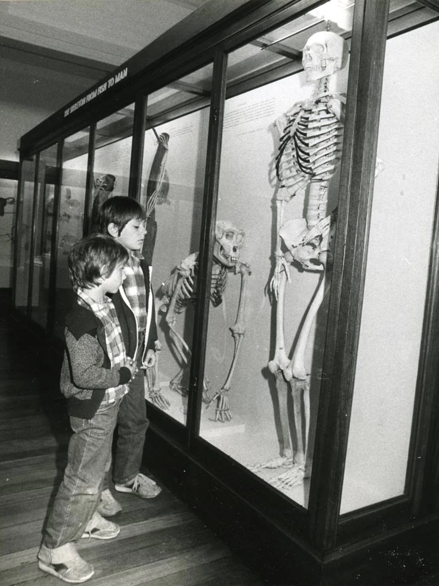
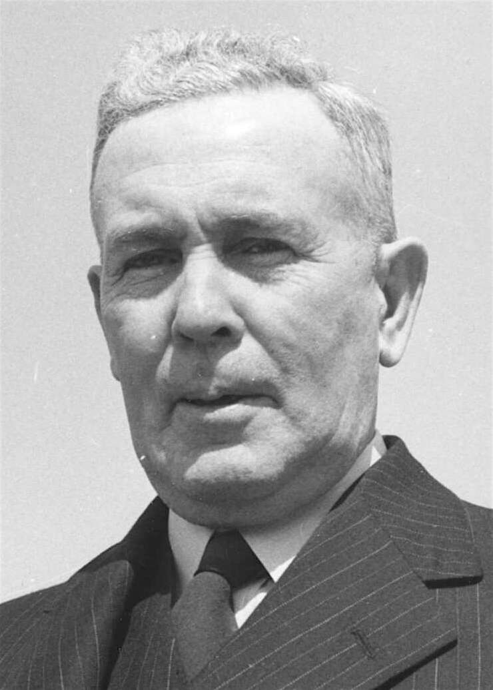

The national fim and sound archive is describe to be the most haunted buildings in Australia. It used to be the home of the Australian Institute of Anatomy, for more than 50 years. The Australian Institute of Anatomy used to be house human skeletons, animal specimens and artefacts, and the site of scientific experiments on display. MacKenzie was tasked with reimagining how the building could be used, and it opened to the public as the Institute of Anatomy in 1931.
Over the years the collection included Phar Lap's heart, Ned Kelly's skull and a mummy from Papua New Guinea. Mr Kennedy said it was a popular tourist destination.
"Those were big-ticket items in their day," he said.
"When you came to Canberra with your family on holiday in the '30s and '40s, you went to Parliament House and then you'd come to the Institute of Anatomy."
MacKenzie served as the institute's director for seven years before his death, after which the government moved the department of health into the top floor of the building.
The museum remained opened, and the department of health drew on the collection for scientific research and experiments. In 1984, the National Film and Sound Archive was formed and moved into the building the following year.
Another of the commonly reported ghost sightings is that of a little girl that would pop out through a grate in the old theatrette and make visiting school students laugh.
There have also been reports of poltergeist activity, particularly where the dissection laboratories used to be.
Since the NFSA moved in, that space has been used as an office with two sound recording booths.
"Quite often staff would have meetings in that room, and they would hear noises coming from the [recording booths] and they would see things flying around in there," Tim the Yowie Man said.
"All these tapes had fallen out of anti-gravity tape decks, which can't happen unless someone or something had forced them out."
A group of ghost hunters from the New South Wales south coast stayed overnight at the building last year.
"They set up their equipment and it all went crazy," Mr Kennedy said.
"One of the things ghosts or spirits apparently do is suck energy, so they'll suck the life out of batteries.
"They had six of these pieces of equipment set up in a row, and we all watched all of the batteries drain from full down to empty at the same time, which was pretty creepy."
The National Institute of Anatomy
Students from across Australia visited the Institute of Anatomy during school trips.(NFSA)
In 1951, Chifley was attending an event alongside other politicians at the Albert hall to celebrate fifty years of Australian autonomy. It was reported that he said he felt ill and decided to go back to his home at Hotel Kurrajong. Ben Chifley suffered from a heart attack in his room later that night and died. News of Chifley's death quickly spread and the event taking place at Albert hall was put to a stop because of this.
The Hotel was built in 1925 by the Commonwealth's chief architect, John Murdoch. Murdoch also designed the nearby Australian Parliament House, which is nearby the Hotel. Hotel Kurrajong was first built to house the administrative and political staff who had been transferred from Melbourne to Canberra when Canberra was declared the new Australian Capital. In 1927 the hotel housed guests who had been invited to witness the official opening ceremony of parliament. The Hotel originally only housed politicians until the great depression in which it was forced to transform itself into a public hotel in order to avoid closure. It became associated with the labour party, who would use the hotel as accommodation for labour party members who where visiting from other constituency's. John Curtin, who would become the prime minister during the second world war, once stayed in the hotel.
The Ghost of Ben Chifley is said to still haunt Hotel Kurrajong, people have seen a man in a grey suit walking about the hotel. He is often seen or balcony's or near windows, pointing towards the parliament house.
click the heart
